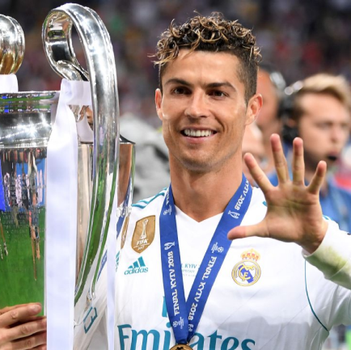
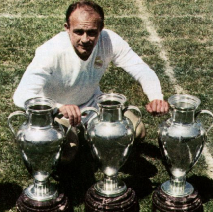
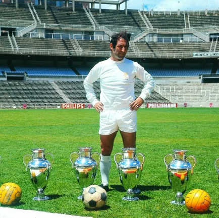
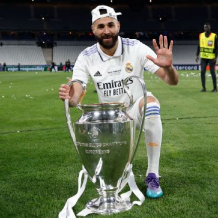

Real Madrid
No início do século XX, a Espanha vivia um período de difusão e surgimento de vários clubes de futebol. É nesse contexto, que em 6 de março de 1902, um grupo de fanáticos por esse esporte, cria o Madrid Football Club, que somente em 1920 teria seu nome mudado para o atual: Real Madrid Club de Fútbol. Considerado o maior clube do século XX pela FIFA, o Real Madrid teve sua fase épica entre 1955-56 e 1959-60, quando ganhou de forma consecutiva as cinco primeiras Ligas dos Campeões da UEFA, respectivamente contra Stade de Reims (FRA), Fiorentina (ITA), Milan (ITA), Stade de Reims (FRA) e Eintracht Frankfurt (ALE). Di Stéfano e Puskás eram os principais galácticos da época. Até 2013, é o clube mais bem-sucedido na história da competição europeia, com nove conquistas, bem como é o maior campeão espanhol, com 32 títulos.
Títulos
Champions League: 14
Campeonato Espanhol: 35
Copa do Rei: 19
Mundial: 7
Ídolos
- 
- 
- 
- 
Cristiano Ronaldo
Cristiano Ronaldo é o número 1 indiscutível desta lista. Ele é a maior lenda do Real Madrid. Ronaldo já teve uma carreira sensacional no Manchester United, mas foi durante os seus anos no Real Madrid que se tornou o melhor jogador do mundo. Foi também no Real Madrid que uma das rivalidades mais disputadas da história do futebol começou a ganhar força: Messi x Ronaldo.
Di Stefano
No início, todas as probabilidades eram a favor do FC Barcelona. Eles estavam prestes a finalizar a contratação desta jovem promessa, contudo, o Real Madrid interveio e acabou por ganhar. Não só Alfredo di Stefano faria parte do Real Madrid, mas também acabou por uma lenda absoluta da entidade.
Paco Gento
Uma verdadeira lenda dos anos 1950 e 1960 e o único jogador do Real Madrid a ter vencido 6 Taças da Europa, mais de 600 jogos disputados e um dos melhores extremos da história. Paco Gento teve uma das carreiras mais longas do futebol e jogou ao lado de outras lendas do clube como Ferenc Puskas e Alfredo di Stefano. Quando se aposentou, Gento já somava impressionantes 200 golos, tornando-se um dos maiores atacantes da história do Real Madrid.
Karim Benzema
Don Karim, le Neuf, KB9 à Maison. Estes são alguns dos nomes usados para se referir a Karim Benzema, atual capitão do Real Madrid e terceiro maior artilheiro da história do clube com 318 golos, atrás apenas de Raúl Gonzalez e Cristiano Ronaldo. Karim Benzema chegou ao Real Madrid há 14 anos. Rapidamente destacou-se pelo seu estilo de jogo incrível e a sua visão do jogo. No entanto, também conseguiu adaptar-se, porque ficou num papel mais secundário quando figuras como Cristiano Ronaldo estavam presentes. Quando Cristiano saiu, Benzema carregou o clube às costas e se adiantou para desempenhar o papel de protagonista.
Santiago Bernabeu
História. Foi inaugurado em 14 de dezembro de 1947 numa partida o Real Madrid e Belenenses de Portugal, com o nome de Estádio Chamartín. À época possuía uma capacidade para 75.145 espectadores, dos quais 27.645 tinham assentos (7.125 cobertos) e 47.500 de pé (2 mil cobertos).